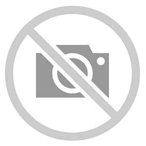

<!--
  Generated template for the ItemsPage page.

  See http://ionicframework.com/docs/components/#navigation for more info on
  Ionic pages and navigation.
-->
<ion-header>
  <ion-navbar>
    <button ion-button menuToggle>
      <ion-icon name="menu"></ion-icon>
    </button>
    <ion-title>Items</ion-title>
  </ion-navbar>
</ion-header>


<ion-content padding>
  <!-- <ion-list> -->
    <ion-fab top right edge>
      <button navPush="AddItemPage" ion-fab mini><ion-icon name="add-outline"></ion-icon></button>
    </ion-fab>
    <button ion-item *ngFor="let item of items">
      <ion-thumbnail item-start>
        
      </ion-thumbnail>
      <h2>{{item.name}}</h2>
      <h3>{{item.description}}</h3>
    </button>
  <!-- </ion-list> -->
</ion-content>